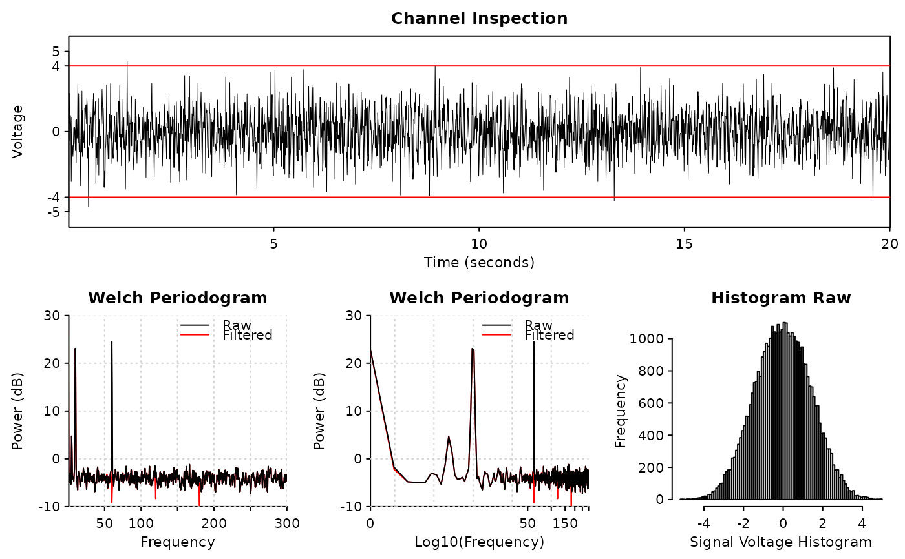

Usage
diagnose_channel(
s1,
s2 = NULL,
sc = NULL,
srate,
name = "",
try_compress = TRUE,
max_freq = 300,
window = ceiling(srate * 2),
noverlap = window/2,
std = 3,
which = NULL,
main = "Channel Inspection",
col = c("black", "red"),
cex = 1.2,
cex.lab = 1,
lwd = 0.5,
plim = NULL,
nclass = 100,
start_time = 0,
boundary = NULL,
mar = c(3.1, 4.1, 2.1, 0.8) * (0.25 + cex * 0.75) + 0.1,
mgp = cex * c(2, 0.5, 0),
xaxs = "i",
yaxs = "i",
xline = 1.66 * cex,
yline = 2.66 * cex,
tck = -0.005 * (3 + cex),
...
)Arguments
- s1
the main signal to draw
- s2
the comparing signal to draw; usually
s1after some filters; must be in the same sampling rate withs1; can beNULL- sc
decimated
s1to show ifsrateis too high; will be automatically generated ifNULL- srate
sampling rate
- name
name of
s1, or a vector of two names ofs1ands2ifs2is provided- try_compress
whether try to compress (decimate)
s1ifsrateis too high for performance concerns- max_freq
the maximum frequency to display in 'Welch Periodograms'
- window, noverlap
see
pwelch- std
the standard deviation of the channel signals used to determine
boundary; default is plus-minus 3 standard deviation- which
NULLor integer from 1 to 4; ifNULL, all plots will be displayed; otherwise only the subplot will be displayed- main
the title of the signal plot
- col
colors of
s1ands2- cex, lwd, mar, cex.lab, mgp, xaxs, yaxs, tck, ...
graphical parameters; see
par- plim
the y-axis limit to draw in 'Welch Periodograms'
- nclass
number of classes to show in histogram (
hist)- start_time
the starting time of channel (will only be used to draw signals)
- boundary
a red boundary to show in channel plot; default is to be automatically determined by
std- xline, yline
distance of axis labels towards ticks
Examples
library(ravetools)
# Generate 20 second data at 2000 Hz
time <- seq(0, 20, by = 1 / 2000)
signal <- sin( 120 * pi * time) +
sin(time * 20*pi) +
exp(-time^2) *
cos(time * 10*pi) +
rnorm(length(time))
signal2 <- notch_filter(signal, 2000)
diagnose_channel(signal, signal2, srate = 2000,
name = c("Raw", "Filtered"), cex = 1)
